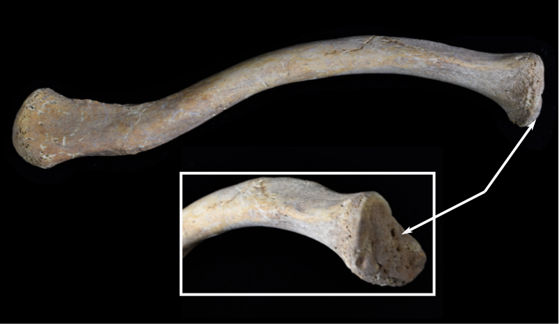
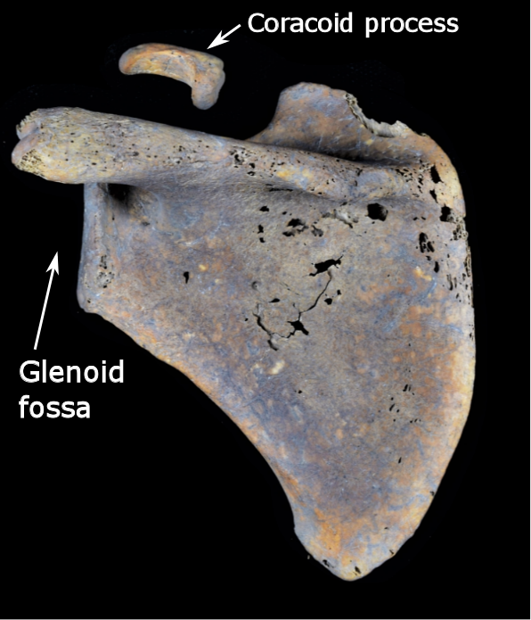
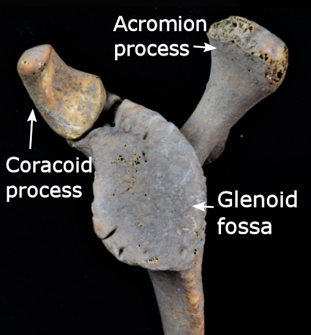
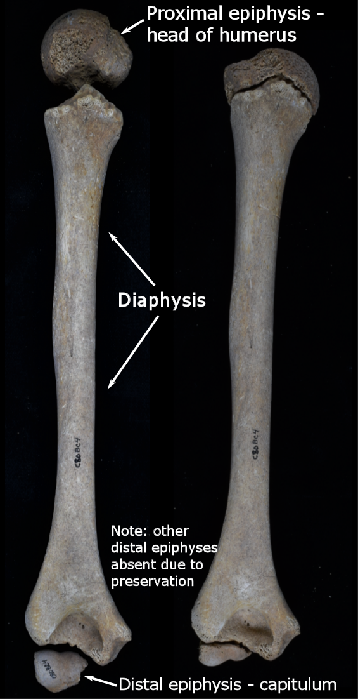
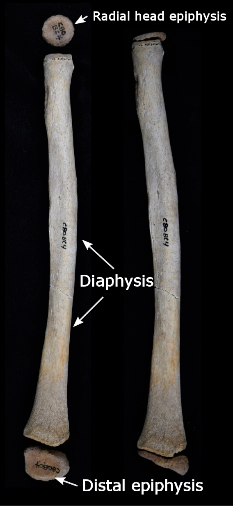
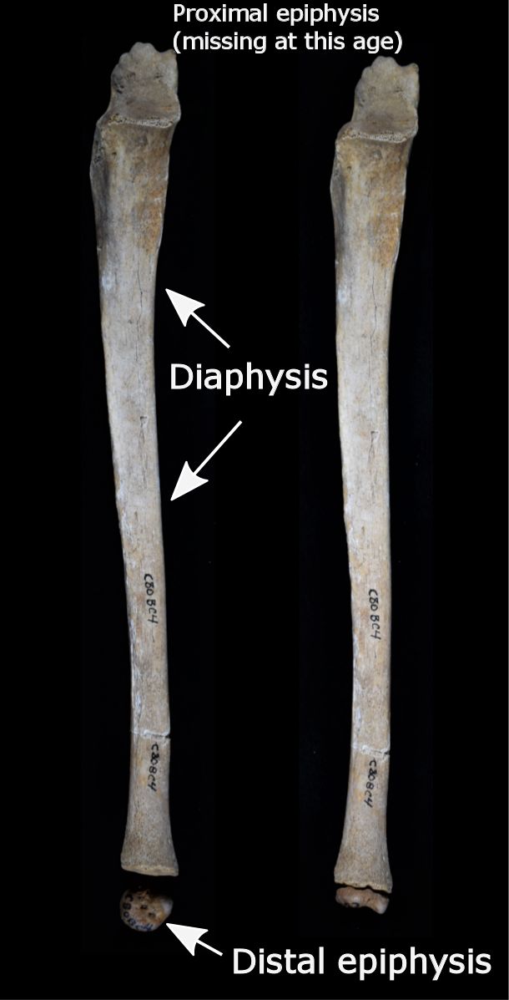
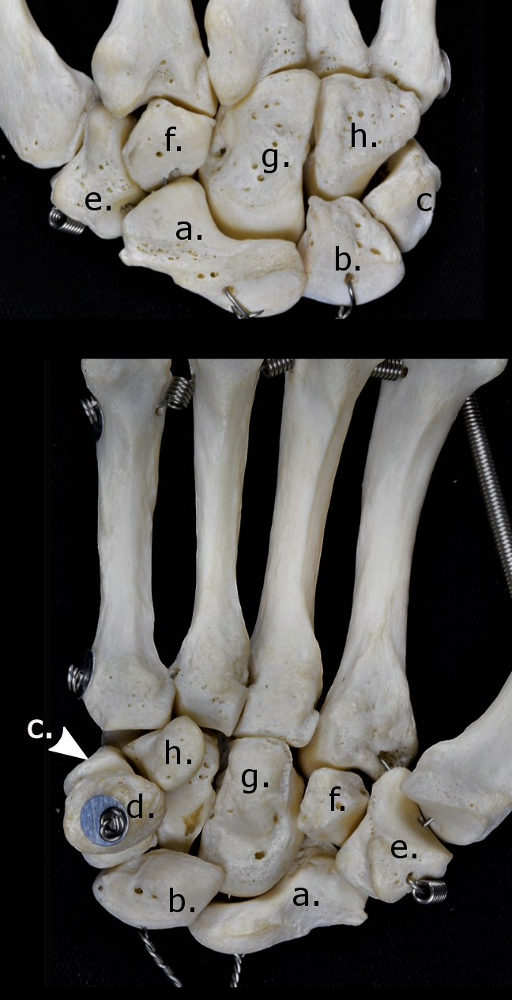

Upper Limbs
Bones of the upper limbs
The bones of the thorax used for juvenile aging in this project are:
- Compare the bone/element you have to the quick description of aging methods provided for that specific bone.
- Select the level of fusion or development for the bone provided in the Age Estimator box to receive an age estimation.
Estimated Age Range:

Subadult clavicle.
Clavicle
The clavicle is an interesting case as it is one of the first bones to form in utero at about 5 weeks, but it is the last bone to have any epiphyses fuse. The medial end of the clavicle remains without an epiphysis until a small medial flake begins to form. The timing of this ossification usually occurs between 12 and 14 years with fusion beginning sometime between 16 and 21 years of age (Stevenson 1924; McKern and Stewart). However, complete fusion of the medial epiphysis is highly variable and only guaranteed to be finished by individuals older than 29 years of age (MacLaughlin 1990; Black and Scheuer 1996).
Medial epiphysis

Scapula with the coracoid epiphysis.
Scapula
The appearance and ossification of scapular elements are complex and numerous. The body of the scapula is mostly ossified upon birth with other centers appearing later (Cardoso 2008). The ossification center for the coracoid process appears within the first year of life (Birkner 1978; Ogden and Philips 1983). The coracoid exists as an unfused epiphysis for many years before fusion is complete. This usually occurs around the 14th and 15th years of life (Anderson 1963).
Although there are many other secondary ossification centers on the scapula, the majority of them are thin and flaky, making preservation of them somewhat problematic. Additionally, their appearance and fusion times are quite variable. As a result, only the coracoid process is discussed in this project.
Coracoid epiphysis

Humerus with unfused epiphyses. Note: due to preservation, only the capitulum is present in the picture
Humerus
At birth, only the diaphysis is present as bone. Secondary ossification centers start to form soon after birth. The proximal epiphysis is actually comprised of three separate epiphyses which coalesce into a compound proximal epiphysis. The head and greater and lesser tubercles appear within the first few years of life and become one epiphysis around 5-7 years old (Flecker 1942; Gardener 1969). The proximal epiphysis eventually fuses to the rest of the humerus between 14-19 (form females) and 16-21 (in males) (Ogden et al. 1978).
Centers for the distal humerus occur at different centers and are somewhat variable in appearance times (Flecker 1942). Since this is only a brief introduction to aging methods for subadults, only the fusion of the compound distal epiphysis will be noted, although it should be mentioned that these epiphyses are usually fused together by age 12 (McCarthy and Ogden 1982a; McCarthy and Ogden 1982b). This compound distal epiphysis fuses to the rest of the humerus between 11-16 (females) and 14-19 (males) (Hansman 1962), yet 15 years of age appears to be the average (Brodeur et al. 1981).
Head of the humerus
Distal humerus

Juvenile radius showing unfused proximal and distal epiphyses.
Radius
The shaft of the radius is present at birth with the first secondary ossification center appearing at the distal end around ages 1-2 years (Elgenmark 1946; Flecker 1962). This epiphysis doesn’t fuse to the rest of the radius until adolescence with studies reporting ranges from 15-16 in females and 17-18 in males (Greulich and Pyle 1959).
The radial head epiphysis doesn’t appear until around age 5 (Brodeur et al. 1981) but generally fuses to the diaphysis before the distal epiphysis (McCarthy and Ogden 1982b). The radial head epiphysis usually fuses around menarche for girls (11-15) and a few years later in boys (Brodeur et al. 1981).
Proximal epiphysis - radial head
Distal epiphysis

Subadult ulna with the distal epiphysis. Note: proximal (olecranon) epiphysis absent due to age of individual, preservation.
Ulna
Similarly to the radius, the ulnar shaft is only present at birth. The distal epiphysis appears around 5-7 (Elgenmark 1946; Flecker 1962) but doesn’t fuse to the ulnar shaft until between 17 and 20 (Hansman 1962; Flecker 1962).
The proximal (or olecranon) epiphysis appears by 8-10 years in children and also fuses before the distal epiphysis (Ogden et al. 1981). Union between the diaphysis and the olecranon can occur between 12 and 14 years.
Olecranon epiphysis
Distal epiphysis - styloid

Hands
Carpals
The carpals in the hand can be a great way of estimating age of subadults as they do not all appear simultaneously. Carpals tend to follow a generalized schedule that appears to be relatively consistent (O’Rahilly et al. 1959). Due to the number of them, and to save space on the page, use the age estimator to the right to find out at what ages certain carpals appear.
Presence of carpals:
Metacarpals
The metacarpals are another useful way to estimate age. The first metacarpal does not have an ossification or fusion pattern like the other metacarpals. The proximal end of the first metacarpal fuses with a base epiphysis (around age 16 (Moss and Noback 1958)). However, the metacarpals for digits 2-5 do not have base epiphyses, but head epiphyses. These appear around ages 2-3 but don’t fuse to the rest of the metacarpal until 14-16 (Scheur and Black 2004; Noback et al. 1960).
Fusion of base to 1st metacarpal:
Fusion of heads to metacarpals 2-5
Manual phalanges
Osseous phalanges are present at birth, but the appearance of their epiphyseal bases doesn’t occur until 1-2 years for proximal phalanges and 2-3 year for middle and distal phalanges (Scheur and Black 2004).
Fusion of the all of the bases occurs around the same time, so only they’re pooled age range will be used. The bases of the phalanges usually fuse to the rest of the bone between 13 and 16 years of age (Scheur and Black 2004).
Fusion of bases to proximal, intermediate, and distal phalanges
Jump to a region